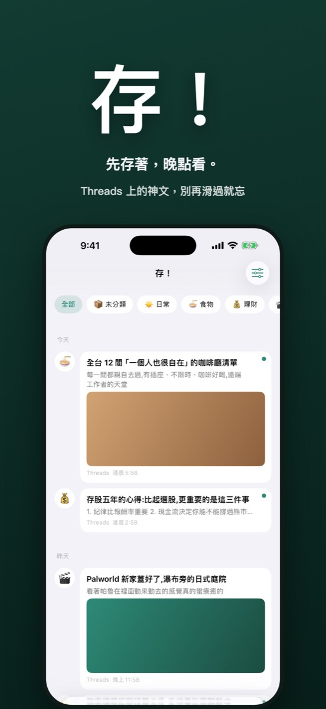
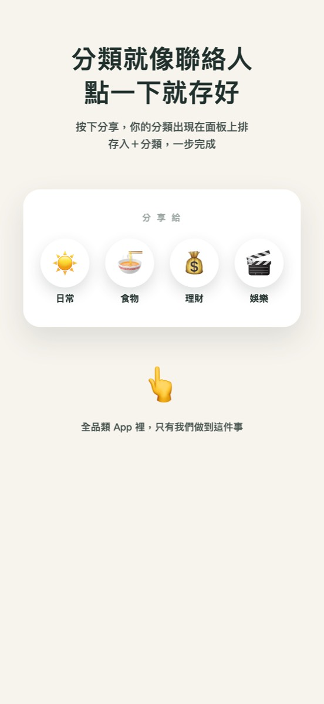
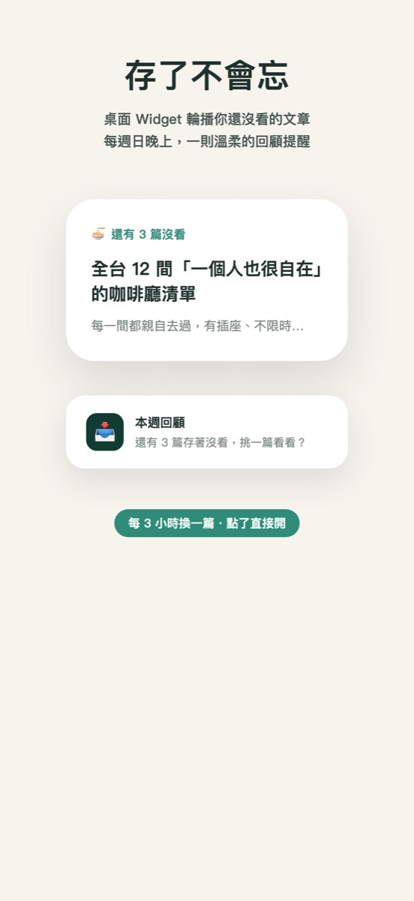

Threads、X、IG、網頁都能存，像傳訊息給自己一樣快。存進來就是快照，原文刪了還在。免費、不用帳號、不收集資料。
在 App Store 下載


存！的分類會像聯絡人一樣出現在分享面板上排，點一下就存進那個分類。
存的當下就把標題、內文、圖抓下來；原貼文刪了、轉私人了，你存的還在。
存很多也找得到；只有影片的貼文寫一句備註，之後搜備註就出來。
每 3 小時輪播一篇還沒看的，存了不再忘。
存了多少、看了多少一目瞭然；全部資料隨時匯出 JSON／CSV，不綁架你的收藏。
沒有伺服器，資料只在你的手機。
是，完全免費，沒有廣告、沒有訂閱。
Threads、X（Twitter）、Instagram、Facebook 和一般網頁；從任何 App 的分享面板都能存。
存入時就做了快照，標題、內文、圖都在你手機裡。
只在你的手機，不經過伺服器；設定頁隨時可以匯出 JSON 或 CSV。
規劃中，做好會在更新說明公告。